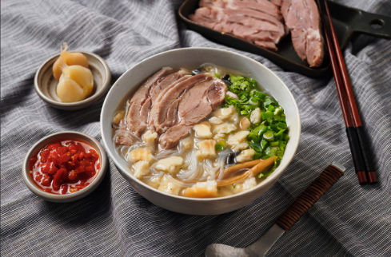
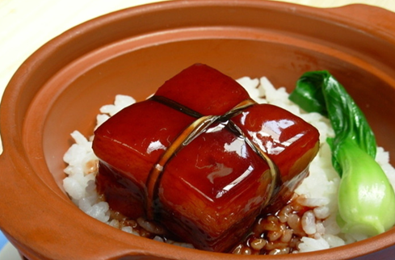
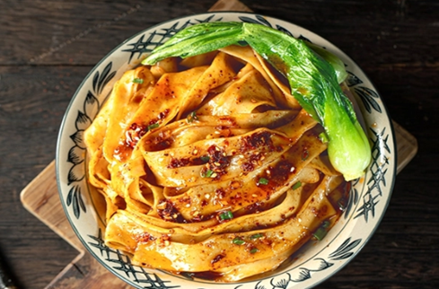
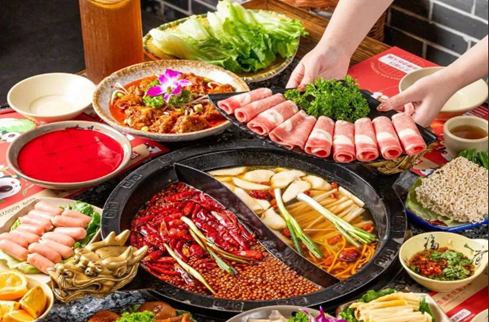
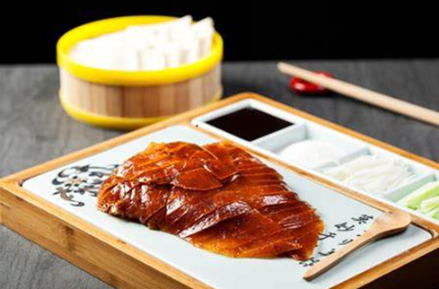
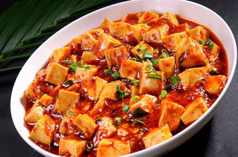
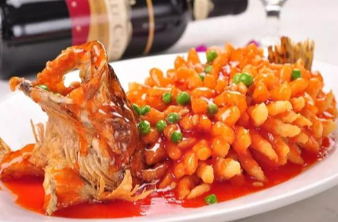
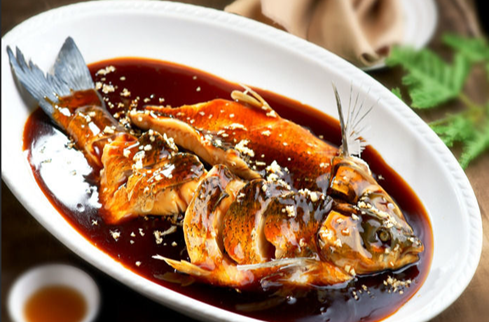
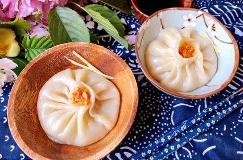

Lamb steamed buns
|

|
Mutton steamed buns, also known as mutton steamed buns, were called "yang gen" in ancient times.
They are Han-style
meals in Guanzhong and originated from the Western Zhou Dynasty. It is cooked finely, with heavy
ingredients and mellow
flavor. The meat is rotten but not greasy, and the soup is thick. It is rich in nutrients, full
of
aroma, tempting the
appetite, and has endless aftertaste after eating.
Su Shi, a famous poet in the Northern Song Dynasty, left a poem that goes, "Long cuisine has
bear
wax, and Qin cuisine
only has yang gan." Because it warms the stomach and resists hunger, it has always been loved by
the
people of Shaanxi.
Foreign guests coming to Shaanxi also rush to taste it first to satisfy their appetite. Mutton
steamed bun has become
the "general representative" of Shaanxi's famous food.
|
Dongpo's braised pork
|

|
The main ingredients and shape of Dongpo Pork are similar. The main ingredients are half-fat and
half-lean pork, which
is stewed with ingredients. The finished dishes are all neatly arranged mahjong pieces,
translucent
red and as colored
as agate. It is soft but not rotten in the mouth, fat but not greasy.
|
Oil spill noodle
|

|
Youpomian is a very common method of making pasta. The handmade noodles are boiled in boiling
water
and put into a bowl.
Ingredients such as chopped green onion, Sichuan pepper powder, salt and so on are spread flat
with
a thick layer of
chili noodles. Pour hot vegetable oil on the noodles and pour the seasoning on it. The oil will
boil
immediately. Boil
the pepper noodles and chili noodles until the bowl is red. Then add an appropriate amount of
soy
sauce and balsamic
vinegar. You can also add cured meat, green pepper and potato shreds, green pepper eggs,
tomatoes
and eggs, etc. to eat
together.
|
Hot pot
|

|
Hot pot generally refers to the cooking method of using a pot as a utensil, using a heat source
to boil a pot, and
boiling water or soup to boil various foods. It can also refer to the pots and pans used in this
cooking method. It is
characterized by eating while cooking, or the pot itself has a thermal preservation effect. Hot
pot is hot to eat,
spicy, salty and fresh, oily but not greasy, depressive and dehumidifying, suitable for the
climate of mountains and
rivers, now developed into a mandarin duck pot, spicy, light and different, each takes what it
needs, according to
personal likes to add different soups, food, suitable for all ages, the best product of winter.
|
Hot pot
|

|
Roast duck is a special dish in Beijing and Nanjing, belonging to Beijing cuisine or Jinling
cuisine. This dish is
famous both at home and abroad for its red color, tender meat, mellow taste, fat but not greasy,
and is known as "the
world's delicacy". It is slightly yellow in color, soft and fragrant, and can be eaten rolled up
with other meat and
vegetable foods. It is a common dish for banquets and a home-style delicacy[3].
|
Mapo Doufu
|

|
Mapo tofu (Sauteed doufu in hot and spicy sauce) is one of the famous traditional dishes in
Sichuan. It began in the
Qing Dynasty. This dish is spicy, spicy, fresh, fragrant, hot, whole, tender and crispy,
highlighting the spicy flavor
of Sichuan cuisine. Type characteristics.
|
Sweet and Sour Mandarin Fish
|

|
Squirrel mandarin fish, also known as squirrel mandarin fish, is a representative dish of Subang
cuisine with both color
and flavor. [1-2] According to legend, Emperor Qianlong went to the south of the Yangtze River
and ate incognito at the
Songhelou restaurant in Suzhou. The chef used carp bones, carved patterns on the fish meat,
added seasonings and
marinated it slightly, then added egg yolk paste and put it into a hot oil pan until tender.
After deep-frying, it is
poured with hot sweet and sour marinade. It looks like a mouse, crispy on the outside and tender
on the inside. It is
sweet and sour. Emperor Qianlong was very satisfied after eating it, and it later became famous
in Suzhou.
|
West Lake Fish in Vinegar Gravy
|

|
West Lake Fish in Vinegar Gravy, also known as "Uncle's Passion" and "Song's Fish", formerly
known as "Song's Fish
Soup", is a famous traditional dish in Hangzhou, Zhejiang Province, China, and is a Zhejiang
cuisine
|
Crab Dumplings in Soup
|

|
Crab roe soup dumplings are a traditional snack in Jiangsu Province and belong to Jiangsu
cuisine. The raw materials for
making crab roe soup dumplings are very particular. The filling is crab roe and crab meat, and
the soup is original
chicken soup. The production process is exquisite. The main ingredients are freshly killed hairy
crabs, fresh pork
rinds, high-gluten flour, etc.
|